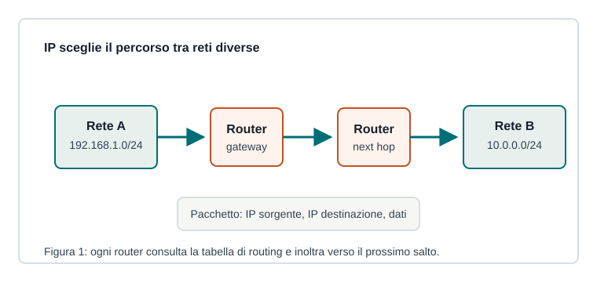

Capitoletto 2.3
Livello di rete e indirizzamento
Il livello di rete permette ai pacchetti di attraversare reti diverse grazie agli indirizzi IP e alle decisioni di routing.

Indirizzo IP e subnet
Un indirizzo IP identifica logicamente un'interfaccia di rete. In IPv4 è composto da 32 bit, spesso scritti in quattro numeri decimali separati da punti, come 192.168.1.25.
La subnet mask o la notazione CIDR indicano quale parte dell'indirizzo identifica la rete e quale identifica l'host. In 192.168.1.25/24, i primi 24 bit indicano la rete.
Gateway e routing
Se la destinazione appartiene alla stessa rete, il pacchetto può essere consegnato localmente. Se appartiene a un'altra rete, viene inviato al gateway predefinito, di solito un router.
| Elemento | Ruolo |
|---|---|
| Indirizzo IP | identifica mittente e destinatario logico |
| Subnet mask | separa parte rete e parte host |
| Gateway | porta di uscita verso altre reti |
| Tabella di routing | indica il prossimo salto |
IPv4, IPv6 e NAT
IPv4 offre circa 4 miliardi di indirizzi, non sufficienti per tutti i dispositivi connessi. Per questo si usano indirizzi privati e NAT nelle reti locali, mentre IPv6 amplia enormemente lo spazio di indirizzamento.
Il NAT traduce indirizzi privati interni in uno o più indirizzi pubblici. È utile, ma rende meno diretto il collegamento end-to-end tra host.
ICMP e diagnostica
ICMP trasporta messaggi di controllo e diagnosi. Strumenti come ping e traceroute lo usano per verificare raggiungibilità, ritardi e percorso approssimativo dei pacchetti.
Se ping 8.8.8.8 risponde ma ping www.example.com no, la rete IP potrebbe funzionare mentre il problema riguarda DNS.
Ripasso
Quando si usa il gateway?
Quando il destinatario non appartiene alla stessa rete locale del mittente.
Che cosa indica /24?
Indica che i primi 24 bit dell'indirizzo sono la parte di rete.